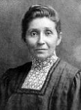

Susan La Flesche who was born in 1865, was raised on the Omaha reservation. Throughout her childhood, she witnessed a white doctor reject treatment to ailing American Indian woman. This prompted La Flesche to become a physician herself. She was the first female Native American to receive a medical degree in the United States, in 1889.
After completing her internship, she began work on the sizable (30-by-45 mile) Omaha reservation. She cared for about 1,300 patients who suffered from many ailments that included tuberculosis, diphtheria and influenza. She was worn down and had left this position by 1894, though she continued to see patients in private practice and served as a medical missionary. She also got married and conceived two children.
In 1909, as a trust period that had limited Omaha control over their property was about to end, the federal government decided that these landowners still lacked the ability to manage their property. La Flesche felt that “the majority of the Omaha are as competent as the same number of white people” and led a delegation to Washington, D.C., to make this case. This resulted in the Omaha being allowed to control their land.
However, La Flesche's focus remained on improving the health of the Omaha; through the years she treated most of the population. She also helped raise the funds to open Walthill Hospital in 1913. After her death in 1915, the facility was renamed the Dr. Susan LaFlesche Picotte Memorial Hospital.

Jean Cuthand Goodwill, a Cree woman from the Little Pine First Nation, was the first Indigenous person in Saskatchewan and one of the first in Canada to become a registered nurse. When Goodwill was young she contracted tuberculosis and spent a lot of time in and around hospitals and medical workers, which influenced her to become a nurse. In the earlier part of her career, Goodwill worked in rural Saskatchewan and also Bermuda, focusing on helping people in need.
Goodwill’s interest in political and community issues grew when she returned to Canada. She was a part of founding the Aboriginal Nurses Association of Canada and was given the title as its president from 1983 to 1990. She was the first Indigenous women to serve as a special advisor to the minister of National Health and Welfare in the federal government and also was employed with the Department of Indian Affairs and Northern Development. She was an educator at the University of Regina, as well as a Canadian Public Health Association board member and worked for a term as president of the Canadian Society for Circumpolar Health.